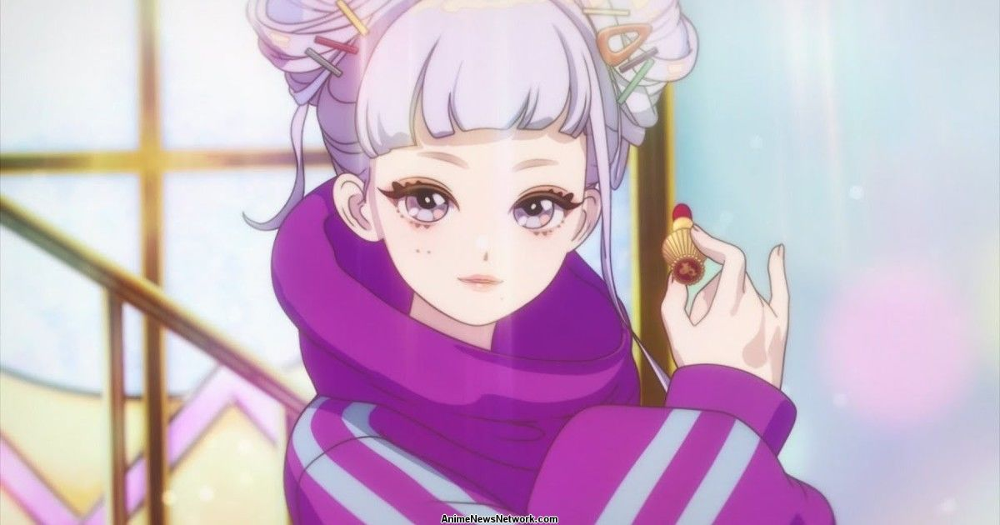
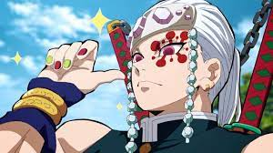

How can you find your favorite anime genere?

⬇️First of all, the list below is showing all anime genre categories⬇️
Adventure
Comedy/Slice of life
Drama/Tragedy
Psychological
History
Mecha/Military
Supernatural/Magic
Romance
Isekai
Why is knowing your favorite anime genre important??
- Knowing my favorie anime genre allows us to dig into one topic and get different perspectives from variety of anime episodes.
Mateirals required to perform my skill
Anime platforms such as netflix and watcha.

Step by step instructions on how you can perform my skill.
1. You can start to watch adventure genre anime because it is most popular anime genre and easy to dig in. 🤩
2. Next, you can try magic or comdey or romance, they are ok to watch. 👍
3. you can start to watch mecha, history, or psycological, but sometimes they have some gore scences.(TW ⚠️)
4. If you think you are pro enough to watch Isekai, you can watch. (cringe/harem(sexual)) 😏😒
-Despite an anime's genre, some anime might have gore scenes.
How do you know you are doing well?
You can just watch first episode of an anime. If it is boring, just turn off and try another anime. If it is intersting, keep watching!!!!!😌
